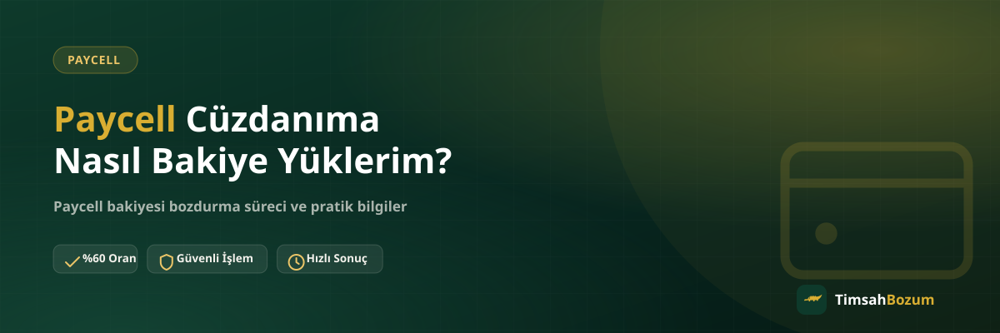

Paycell cüzdanında bakiye bulunması için önce bu bakiyenin bir şekilde cüzdana girmesi gerekir. Kimi kullanıcı bunu banka kartından yükleme yaparak sağlar, kimi ise hediye veya kampanya yoluyla bakiye kazanır. Bu yazıda Paycell cüzdanına bakiye yüklemenin genel yollarını, dikkat edilmesi gereken noktaları ve yüklediğin bakiyeyi daha sonra nasıl değerlendirebileceğini anlatıyoruz.
Paycell Cüzdanına Bakiye Yüklemenin Yolları
Paycell, Turkcell'in sunduğu dijital bir cüzdan uygulamasıdır ve cüzdana bakiye girmesinin birden fazla yolu vardır. Hangi yolu seçtiğin, bakiyenin kaynağını belirler ama cüzdanda göründükten sonra bakiyenin kullanımı veya bozdurulması açısından bir fark oluşturmaz.
Paycell Cüzdanına Hangi Kaynaklardan Bakiye Gelir?
En yaygın yöntem banka kartı veya hesabından doğrudan cüzdana para aktarmaktır. Bunun dışında başka bir Paycell kullanıcısından transfer alma, kampanya veya hediye yoluyla bakiye kazanma da cüzdana bakiye girmesinin yolları arasında. Hangi yoldan geldiğine bakılmaksızın, cüzdanında göründüğü anda bu tutar senin Paycell bakiyen olarak kabul edilir.
Banka Kartından Paycell'e Bakiye Yükleme Güvenli mi?
Paycell uygulaması üzerinden banka kartı bilgisi girerek yükleme yapmak, uygulamanın kendi güvenlik katmanları içinde gerçekleşen bir işlemdir. Burada dikkat etmen gereken şey, kart bilgilerini sadece resmi Paycell uygulaması içinde paylaşman; uygulama dışında bir bağlantı veya form üzerinden kart bilgisi isteyen hiçbir kanal güvenilir değildir. TimsahBozum olarak bizim sürecimizde senden hiçbir zaman kart bilgisi veya hesap şifresi istenmez, bu bilgiler bozum işleminin kapsamı dışındadır.
Yüklenen Bakiye Ne Kadar Sürede Hesaba Yansır?
Yükleme süresi kullandığın yönteme ve bankanın işlem hızına göre değişebilir; bazı yüklemeler anında görünürken bazıları kısa bir gecikmeyle cüzdana yansıyabilir. Bu süre tamamen Paycell uygulamasının ve bankanın kendi altyapısıyla ilgilidir, TimsahBozum'un bozum süreciyle bir bağlantısı yoktur. Yükleme tamamlandığında ve bakiye cüzdanında göründüğünde, bu bakiyeyi istediğin zaman değerlendirebilirsin.
Paycell Bakiyesi Yüklerken Nelere Dikkat Etmeli?
Yükleme işlemini her zaman resmi Paycell uygulaması veya web sitesi üzerinden yapmak, en temel güvenlik kuralıdır. Üçüncü taraf bir bağlantıdan "Paycell'e bakiye yükleme" vaadiyle gelen hiçbir teklife kart bilgisi veya kişisel bilgi paylaşma. Ayrıca yükleme sonrası cüzdanındaki güncel bakiyeyi uygulama üzerinden kontrol etmek, ileride bir işlem yapacağın zaman doğru tutarı bildirmene yardımcı olur.
Yüklediğim Paycell Bakiyesini Nakde Çevirebilir miyim?
Evet. Paycell cüzdanına hangi yoldan girmiş olursa olsun, cüzdanında görünen bakiye bakiye tabanlı bir değerdir ve bozdurulabilir. Güncel referans oranımıza göre Paycell bozdurma oranı %60 seviyesinde işliyor; oranlar piyasa koşullarına göre değişebildiği için işlem öncesi güncel oranı WhatsApp'tan teyit etmek en doğrusu. Bakiyenin tamamını değil, istediğin bir kısmını bozdurmayı da seçebilirsin, çünkü Paycell kod tabanlı değil bakiye tabanlı bir hizmet. Detaylı süreci Paycell bakiyesi bozdurmanın güvenli yolu başlıklı yazımızda bulabilirsin.
Paycell Hesabım İçin Üyelik veya Belge Gerekir mi?
Bakiyeyi cüzdana yüklemek için Paycell uygulamasında bir hesabın olması yeterli; bozdurma tarafında ise TimsahBozum'un üyelik, form doldurma veya kimlik belgesi isteyen bir süreci yok. Tek ihtiyacın güncel bakiyeni gösteren bir ekran görüntüsünü paylaşmak ve Paycell bozdurma hattımızdan oranı teyit etmek. Hesabına erişim verme veya şifre paylaşma gibi bir adım hiçbir aşamada istenmez.
Birden Fazla Kaynaktan Gelen Bakiye Cüzdanda Nasıl Görünür?
Banka kartından yaptığın yükleme, bir arkadaşından aldığın transfer ve kampanya yoluyla kazandığın bakiye, Paycell cüzdanında ayrı ayrı değil tek bir toplam bakiye olarak görünür. Bu yüzden bozum işlemi için bildireceğin tutarı hesaplarken kaynakları tek tek ayırman gerekmez; uygulamanın ana ekranında gördüğün güncel toplam bakiye, paylaşman gereken tek bilgidir. Kaynağın ne olduğu oranı veya işlem şeklini değiştirmez, çünkü cüzdana girdiği anda her bakiye aynı şekilde değerlendirilir.
Yükleme Yaparken Hangi Bilgileri Asla Paylaşmamalısın?
Kart numaranı, son kullanma tarihini, CVV kodunu veya hesabına gelen SMS doğrulama kodunu sadece resmi Paycell uygulaması içindeki yükleme ekranına gir; bu bilgileri WhatsApp, e-posta veya başka bir mesajlaşma kanalı üzerinden hiç kimseyle paylaşma. Bozum sürecinde de aynı kural geçerli: TimsahBozum sana hiçbir zaman kart bilgisi, şifre veya SMS doğrulama kodu sormaz. Böyle bir talep aldığında bunun resmi hattımızla ilgisi olmadığını bilmen, olası bir dolandırıcılık girişimine karşı en güçlü korumandır.
Yükleme Sonrası Bakiyemi Nereden Kontrol Ederim?
Yükleme işlemi tamamlandığında güncel bakiyeni Paycell uygulamasının ana ekranından anında görebilirsin. Bozum işlemine başlamadan önce bu ekranın güncel bir görüntüsünü alman, hem senin hem bizim için süreci netleştirir; tarih ve tutarın net okunabildiği bir ekran görüntüsü, işlemin ilk adımından itibaren karışıklık yaşanmasını önler. Eski bir tarihe ait veya okunaksız bir görüntü paylaşmak işlemi iptal etmez ama güncel bilgiyi tekrar istememizi gerektirir, bu da süreci bir adım geciktirir.
Yükleme İşlemim Başarısız Olursa Ne Yapmalıyım?
Bir yükleme denemesi herhangi bir nedenle tamamlanmazsa bu durum doğrudan Paycell uygulamasının veya kullandığın bankanın işlem akışıyla ilgilidir; bu aşamada TimsahBozum'un devreye girebileceği bir adım yoktur, çünkü bozum süreci ancak bakiye cüzdanına geçtikten sonra başlar. Başarısız bir denemeden sonra tekrar denemeden önce uygulama içindeki işlem geçmişini kontrol etmek, tutarın gerçekten geçip geçmediğini anlamanın en güvenilir yolu. Bakiye cüzdanına ulaştığında ise bozdurma tarafında herhangi bir ek adım veya bekleme süresi gerekmez.
Paycell cüzdanına yüklediğin bakiyeyi değerlendirmek istiyorsan, güncel bakiyeni gösteren bir ekran görüntüsüyle WhatsApp hattımıza yazman yeterli. Oranı teyit ettikten sonra süreç aynı gün içinde ilerler.
İlgili Yazılar
- Paycell Bakiyesi Nasıl Oluşur, Nereden Gelir?
- Paycell Bakiyesi Bozdurmanın Güvenli Yolu
- Turkcell Hattı Olmayanlar Paycell Bakiyesi Bozdurabilir mi?